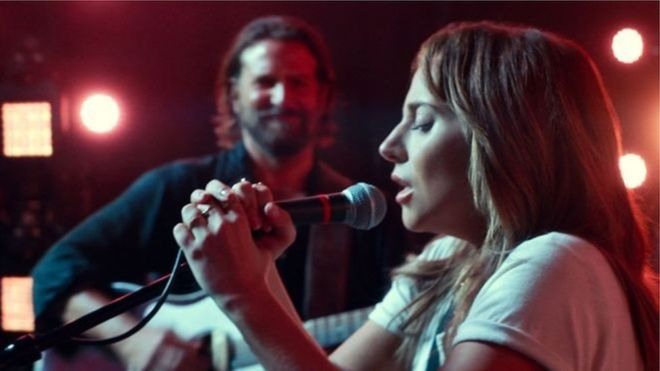
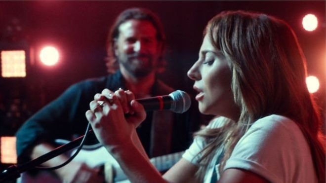
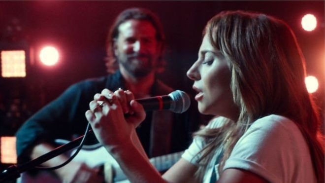

Народження зірки (англ. A Star Is Born) — американський музичний драматичний фільм 2018 року, продюсером і режисером якого став Бредлі Купер. Є римейком фільму «Зірка народилася» 1937 року. Головні ролі зіграли Бредлі Купер (Джексон Мейн) і Леді Гага (Елі). Фільм розповідає про музиканта-п'яницюДжексона Мейна, що зустрічається і закохується в молоду співачку Елі.
Кантрі-музикант Джексон Мейн, чия кар'єра стрімко котиться до низу, одного разу знайомиться з нікому не відомої талановитою співачкою Еллі. Між героями спалахує пристрасний роман. Джек допомагає Еллі досягти успіху. Але чим швидше набирає обертів музична кар'єра Еллі, тим складніше йому миритися зі своєю в'янучої славою.
